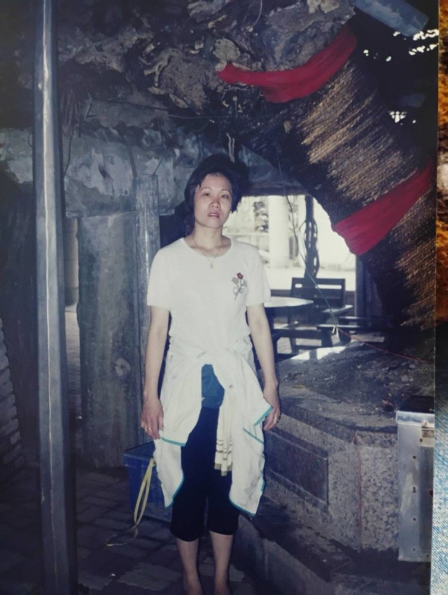
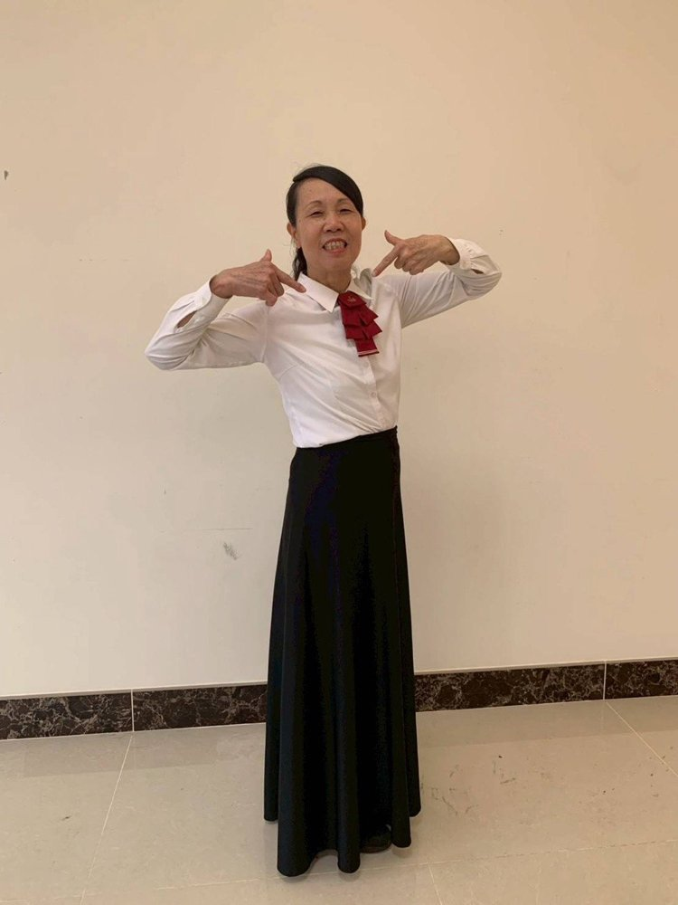
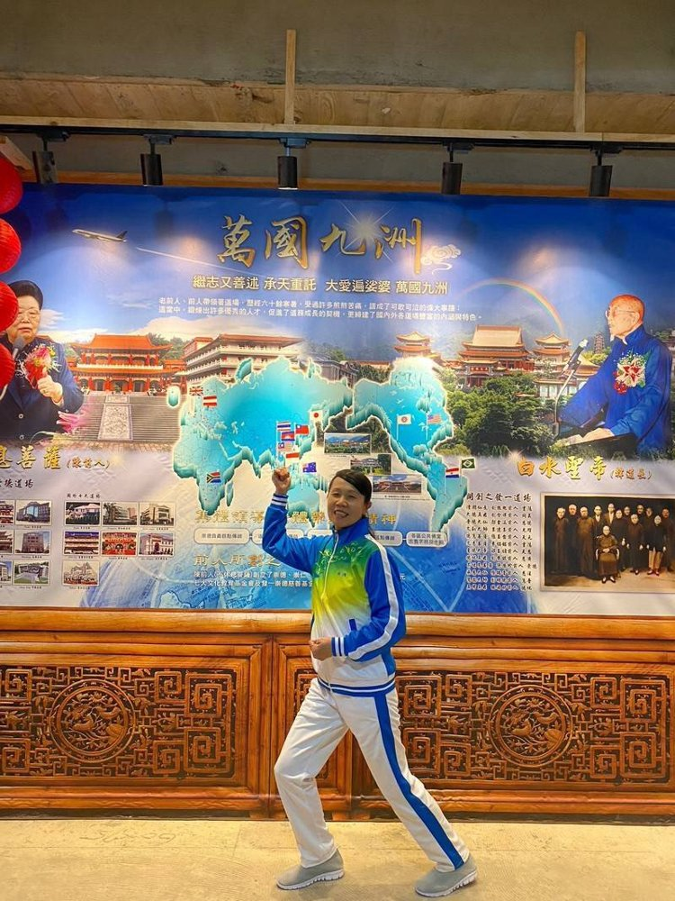

陳秀鳳
正德佛堂





正德五十週年 — 道親心得分享
發一崇德 陳秀鳳
各位點傳師、各位講師、各位前賢，大家好。後學是陳秀鳳。
感謝天恩師德，讓後學從小就能夠求道，走上這條修辦的道路。後學十五歲在桃園培德求道，由陳文良點傳師為後學點道。求道之後，後學就在培德跟隨點傳師修辦十多年。後來在二十八歲的時候結婚到竹東。那時候竹東的道務還沒有那麼開展，認識的人也沒那麼多。後學就跟著一位桃園培德的劉點傳師，他在彰化道場辦道，後學便跟他到彰化道場辦了十多年。
有一天，點傳師跟後學說：「妳不要跑到那裡去，就到新竹找李素鳳點傳師幫辦，這樣就不用去到那麼遠了。」後學也就聽了點傳師的指示，到新竹來找李點傳師。李素鳳點傳師非常慈悲，也非常愛護後學，後學就在她身邊幫辦了十幾年。這十幾年來，後學跟著李點傳師修辦，到新竹後加入服務組，服務組又兼善歌隊。在善歌隊唱歌的帶動下，後學體會非常多。參加了好幾場大型活動——天壇落成，還有六九桃園道場、林口體育場，另外好幾場的大型活動，後學在善歌隊裡面體會非常深刻。有仙佛做的仙歌，用仙佛的詞語把道傳播出去，讓每個人都能夠聽到善歌而發心。立志修辦道，替師分憂代勞。
今年是金馬年，希望大家能夠衝衝衝，加油、加油、再加滿油，創造更好的成績來！後學分享到這邊，謝謝各位前賢。
（依陳秀鳳道親錄音整理，民國115年6月）